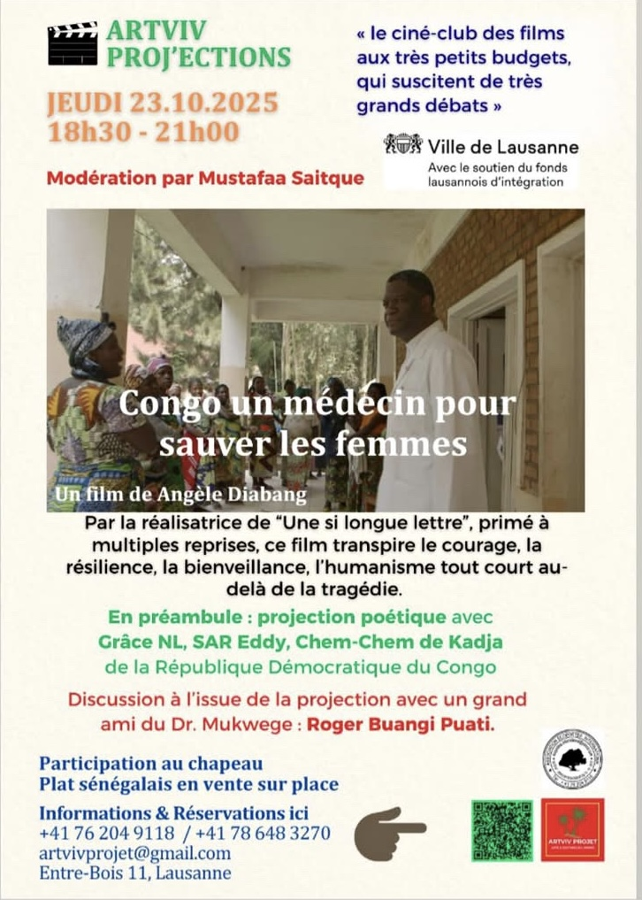
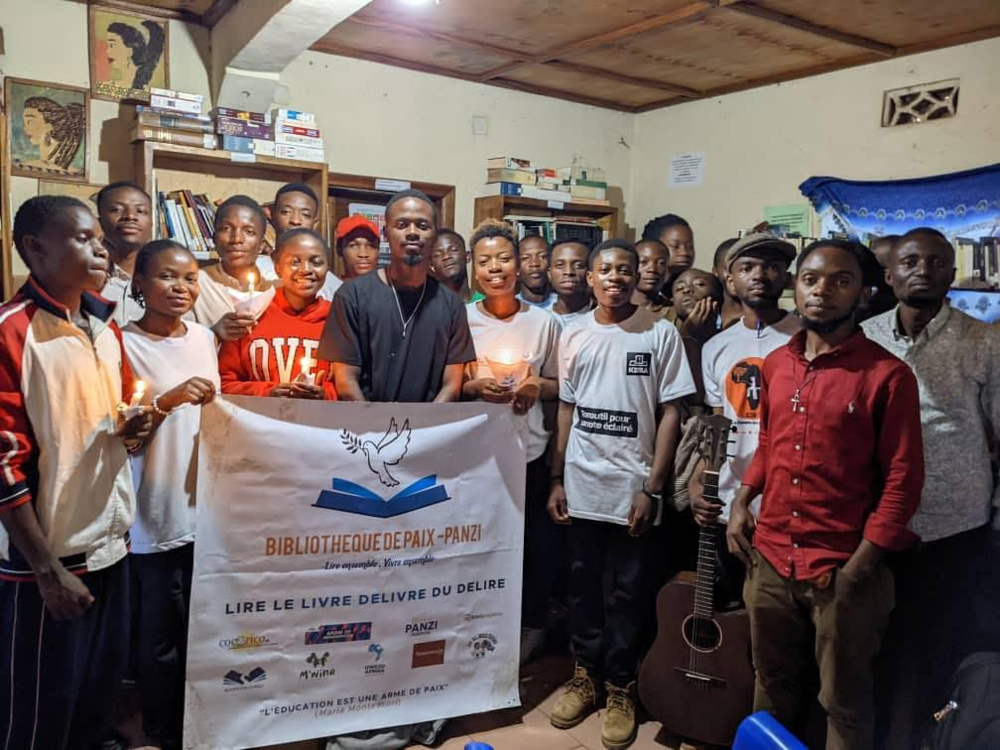

Biographie
Artiste slameur, rappeur et artiviste originaire de Bukavu, Sar Eddy Safari est une voix engagée. Chercheur en Master 1 de Droit, il lie la rigueur juridique à la puissance poétique pour transformer le verbe en outil de résilience.
Démarche Artistique
Artiviste, il fusionne le slam et le rap pour transformer le verbe en outil de résilience et de sensibilisation aux droits humains.
Galerie

La parole en mouvement

Atelier Panzi